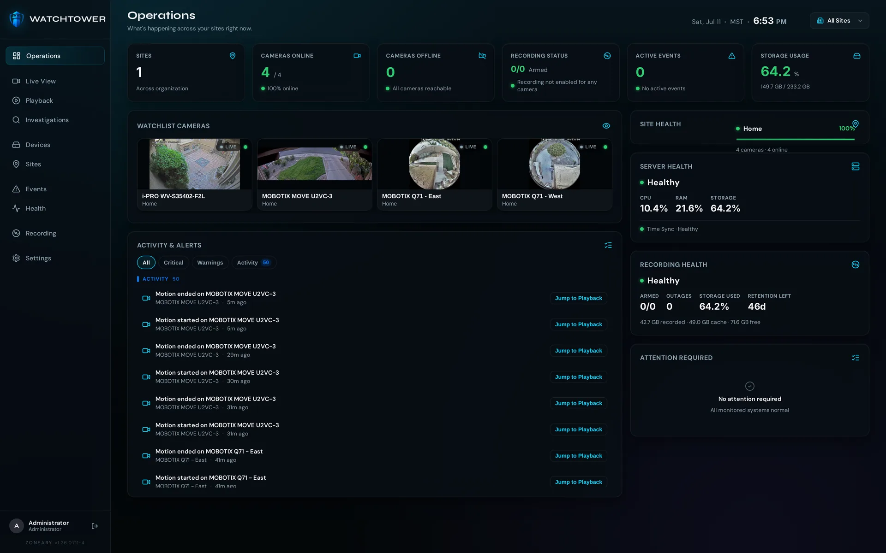
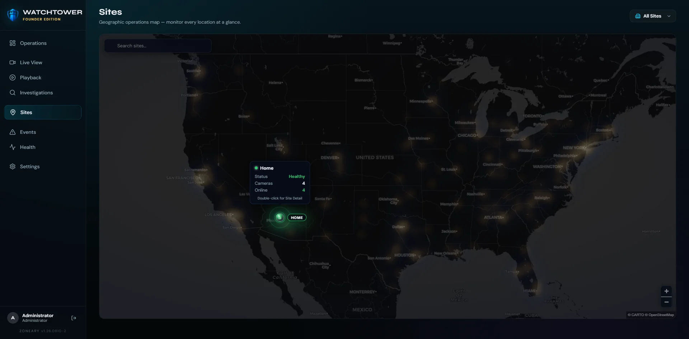
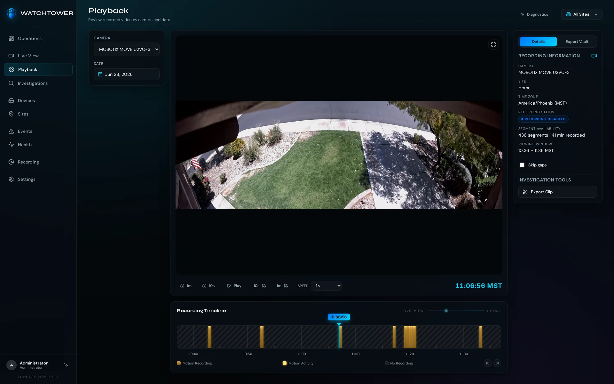
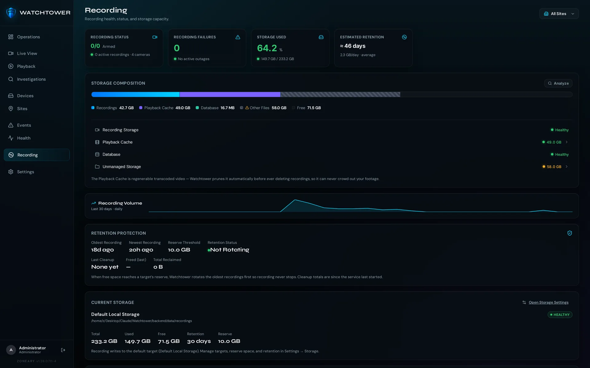
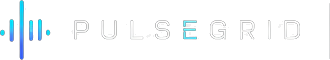
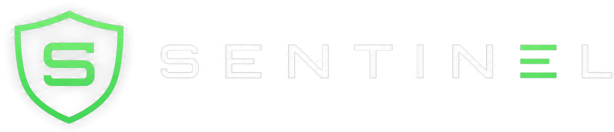
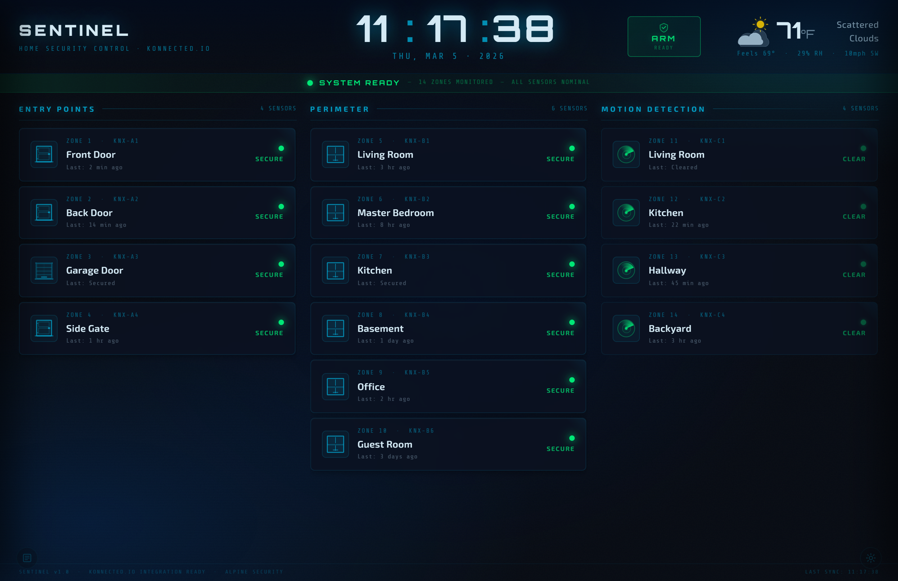

Watchtower is Zoneary's local-first video management system — live monitoring, recording, playback and investigations on your own hardware, no subscription required, with your footage kept where it belongs: with you.

Zoneary creates local-first software for the systems that protect people, property, and operations. Our products bring video management, infrastructure health, and home security control together through modern interfaces designed for real-world security environments.
Live monitoring, recording, playback and investigations — built to stay responsive at scale, honest about system state, and yours to own. No per-camera tax, no cloud landlord. This is the heart of Zoneary; everything else exists to support it.

Fluid multi-camera walls designed for responsive, low-latency monitoring. Latency is a security flaw — Watchtower treats it like one.
Navigate weeks of footage with precise, responsive controls.
Fast timelineBookmark, tag and export clips to build an investigation.
Case export
Monitor every location at a glance.
Runs entirely on your hardware with modern licensing — buy it once, own it forever. No per-camera tax, no cloud holding your footage hostage. The internet can go down; your security doesn't.
On-prem · one-time license · no cloud round-tripsNot conceptual artwork — these are the actual screens your team works in every day.
Sites, cameras, recording and storage in one calm view. And when Watchtower isn't sure, it says so — "unknown", never a comforting green. False reassurance is more dangerous than an honest warning.
Pick a camera and a moment, and Watchtower takes you straight there. A dense recording timeline, motion markers and export tools turn footage into a clear record for investigations.

Watchtower tracks storage composition, retention and system health in real time — and tells you before you run out of room. If footage has a gap, it doesn't hide it. The playback cache is pruned automatically before a single recording is ever touched, so it can never crowd out what you came for.

Something is always
watching over this place.
Each product solves one real problem in physical security — and together they form a single local-first ecosystem. Watchtower leads; PulseGrid and Sentinel complete the picture.
A modern, local-first video management system for live monitoring, recording, playback, investigations, and system health — running on your own hardware without a mandatory subscription.
Explore Watchtower
PulseGrid watches the infrastructure behind the video — cameras, servers, storage, networks, power and environmental conditions — before small problems become major outages.

Sentinel brings the home security you already own — sensors, wiring and sirens — into one modern, local dashboard, with device awareness, event history and full control.
A server can answer every network check while its drive quietly fails and its services collapse. PulseGrid separates is it responding from is it actually well — so you catch trouble before darkness, not after.


The sensors, sirens and wiring you already have are fine — it's the plastic keypad and the contract that feel stuck in the past. Sentinel brings what's already in your walls into one modern, local dashboard, built for you instead of the installer.
Zoneary products are designed to run where your security operations live — no mandatory cloud dependency, no forced subscription model. Your operational data stays under your control. It's the direction behind everything we build.
We're a small team building the security software we always wished existed — tested against real cameras, real storage, real failures. Four beliefs sit underneath every screen.
The system keeps working when the internet doesn't. Your footage lives on your hardware. A cancelled subscription can't disable what you already own.
Pay for value, not dependency. No per-camera tollbooth, no monthly ransom just to keep using the cameras you paid for.
If a drive is failing, we show it. If footage has a gap, we don't hide it. When we don't know, we say "unknown" — never a comforting green.
Professional capability without institutional arrogance. Built for the homeowner with four cameras and the operator with two hundred.
Start with the flagship, or bring the full Zoneary ecosystem home. Local, owned, and honest — the way it should have been all along.